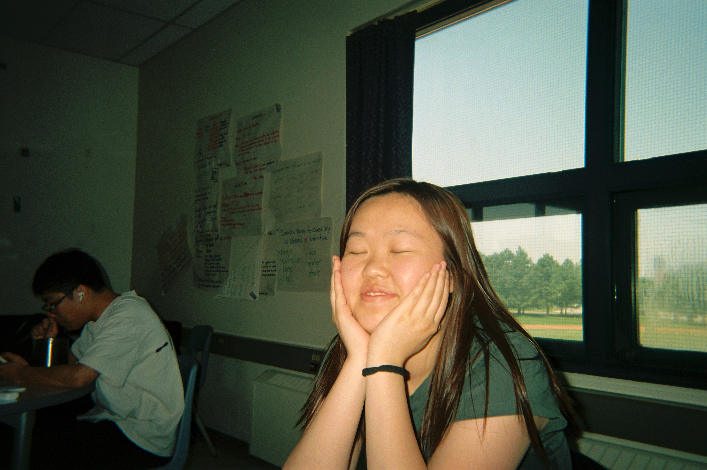

i first got into photography after a family trip to cuba. i still remember the entire plane ride home, i was obsessed with playing with apple preset filters — like the ones called vivid and vivid warm (yea...). i later begged my dad to buy me, the most popular camera at the time THE CANON G7X MARK ii!! (which i still use today). much later, i was lucky to be apart of a media team where i taught myself how to edit photos.
